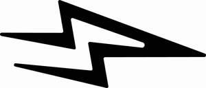

Trade Mark Journal No.2026/008 20 February 2026
UK00004326812 20 January 2026 (9,25,35)

- Class 9
- Eyepieces; eye protection; protective eyewear; personal electronic devices used to track fitness goals and statistics; wearable activity trackers; smart watches; wearable electronic devices, namely, watches, bracelets, and wristbands that are comprised of software that communicates data to personal digital assistants, smart phones, and personal computers through internet websites and other computer and electronic communication networks; wearable digital electronic devices comprised primarily of software for alerts, messages, emails, and reminders, and for recording, organizing, transmitting, manipulating, reviewing, and receiving text, data, audio, image and digital files and display screens; multifunctional electronic devices for displaying, measuring, and uploading to the Internet information including time, date, body and heart rates, direction, distance, altitude, speed, steps taken, calories burned, and the declination of body and heart rates, altitude and speed; cables, namely charging cables; sensors for scientific use to be worn by a human to gather human biometric data; computer software; mobile applications; computer software and mobile applications relating to fitness and exercise; computer application software for smartphones and mobile devices in the fields of fitness and exercise featuring personal training services, coaching, workouts and fitness assessments; mobile application software for creating personalized fitness training programs; computer application software for smartphones and mobile devices to support corporate wellness programs; computer software, software for mobile devices and downloadable mobile applications for tracking fitness; computer software and mobile applications providing fitness, exercise and wellness information; software for alerts, messages, emails, and reminders, and for recording, organizing, transmitting, manipulating, reviewing, and receiving text, data, audio, image and digital files and display screens.
- Class 25
- Clothing, footwear, headwear; menswear; ladies’ wear; children’s wear; printed clothing; printed footwear; printed headgear; sportswear; sports clothing; tops; printed tops; sleeveless t-shirts; short-sleeved, long-sleeved and sleeveless tops; t-shirts; printed t-shirts; short-sleeved and long-sleeved t-shirts; polo shirts; vests; hoodies and sweatshirts; jumpers; sweaters; trousers; chinos; jeans; jumpers; cardigans; shirts; polo shirts; coats and jackets; outerwear; waistcoats; suits; joggers; tracksuits; blazers; shorts; swim shorts; swimwear and beachwear; swimsuits; bikinis; loungewear; tracksuits; scarves and gloves; dresses; bodysuits; knitwear; playsuits and jumpsuits; skirts; leggings; nightwear; underwear and undergarments; wrist bands; shoes; shoes for casual wear; boots; espadrilles; pumps; sandals; slippers; flip-flops; plimsolls; work shoes; dress shoes; high-heeled shoes; platform shoes; leather shoes; slip-on shoes; waterproof shoes; rain shoes; sports shoes; athletics shoes; trainers; sneakers; skiing shoes; tennis shoes; training shoes; snowboard shoes; riding shoes; bowling shoes; gymnastic shoes; ballet shoes; baseball shoes; boxing shoes; golf shoes; leisure shoes; basketball shoes; hiking shoes; walking shoes; volleyball shoes; rugby shoes; handball shoes; running shoes; jogging shoes; cycling shoes; football shoes; soccer shoes; dance shoes; tap shoes; yoga shoes; hockey shoes; mountaineering shoes; hosiery; tights; socks; insoles for footwear; gel cushions for use with or in footwear; stiffeners for shoes; heel pieces for shoes; heel protectors for shoes; tongues for shoes and boots; pullstraps for shoes and boots; cleats for attachment to sports shoes; fittings of metal for boots and shoes; protective metal members for shoes and boots; shoes soles for repair; studs for football boots; parts, fittings and accessories for the foregoing.
- Class 35
- Advertising, marketing and promotional services; advertising, marketing and promotional services in relation to clothing and footwear; product demonstrations and product display services; product demonstrations and product display services at trade shows and exhibitions; trade shows and exhibition services; loyalty, incentive and bonus program services; provision of advertising space, time and media; distribution of advertising, marketing and promotional material; franchising; business consultancy relating to clothing and footwear; retail and online retail services in relation to sunglasses, eyewear, eyepieces, eye protection, corrective eyewear, protective eyewear, personal electronic devices used to track fitness goals and statistics, wearable activity trackers, smart watches, wearable electronic devices, namely, watches, bracelets, and wristbands that are comprised of software that communicates data to personal digital assistants, smart phones, and personal computers through internet websites and other computer and electronic communication networks, wearable digital electronic devices comprised primarily of software for alerts, messages, emails, and reminders, and for recording, organizing, transmitting, manipulating, reviewing, and receiving text, data, audio, image and digital files and display screens, multifunctional electronic devices for displaying, measuring, and uploading to the Internet information including time, date, body and heart rates, direction, distance, altitude, speed, steps taken, calories burned, and the declination of body and heart rates, altitude and speed, cables, namely charging cables, sensors for scientific use to be worn by a human to gather human biometric data, computer software, mobile applications, computer software and mobile applications relating to fitness and exercise, computer application software for smartphones and mobile devices in the fields of fitness and exercise featuring personal training services, coaching, workouts and fitness assessments, mobile application software for creating personalized fitness training programs, computer application software for smartphones and mobile devices to support corporate wellness programs, computer software, software for mobile devices and downloadable mobile applications for tracking fitness, computer software and mobile applications providing fitness, exercise and wellness information, software for alerts, messages, emails, and reminders, and for recording, organizing, transmitting, manipulating, reviewing, and receiving text, data, audio, image and digital files and display screens, clothing, footwear, headwear, menswear, ladies’ wear, children’s wear, printed clothing, printed footwear, printed headgear, sportswear, sports clothing, tops, printed tops, sleeveless t-shirts, short-sleeved, long-sleeved and sleeveless tops, t-shirts, printed t-shirts, short-sleeved and long-sleeved t-shirts, polo shirts, vests, hoodies and sweatshirts, jumpers, sweaters, trousers, chinos, jeans, jumpers, cardigans, shirts, polo shirts, coats and jackets, outerwear, waistcoats, suits, joggers, tracksuits, blazers, shorts, swim shorts, swimwear and beachwear, swimsuits, bikinis, loungewear, tracksuits, scarves and gloves, dresses, bodysuits, knitwear, playsuits and jumpsuits, skirts, leggings, nightwear, underwear and undergarments, wrist bands, shoes, shoes for casual wear, boots, espadrilles, pumps, sandals, slippers, flip-flops, plimsolls, work shoes, dress shoes, high-heeled shoes, platform shoes, leather shoes, slip-on shoes, waterproof shoes, rain shoes, sports shoes, athletics shoes, trainers, sneakers, skiing shoes, tennis shoes, training shoes, snowboard shoes, riding shoes, bowling shoes, gymnastic shoes, ballet shoes, baseball shoes, boxing shoes, golf shoes, leisure shoes, basketball shoes, hiking shoes, walking shoes, volleyball shoes, rugby shoes, handball shoes, running shoes, jogging shoes, cycling shoes, football shoes, soccer shoes, dance shoes, tap shoes, yoga shoes, hockey shoes, mountaineering shoes, hosiery, tights, socks, insoles for footwear, gel cushions for use with or in footwear, stiffeners for shoes, heel pieces for shoes, heel protectors for shoes, tongues for shoes and boots, pullstraps for shoes and boots, cleats for attachment to sports shoes, fittings of metal for boots and shoes, protective metal members for shoes and boots, shoes soles for repair, studs for football boots, parts, fittings and accessories for the foregoing.
Athletic Technology Company Ltd
Representative: Trade Mark Wizards Limited